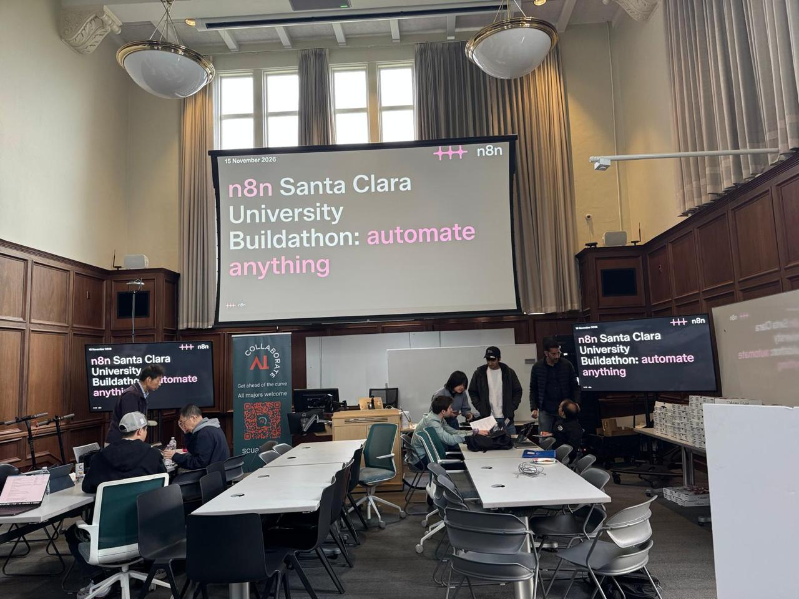
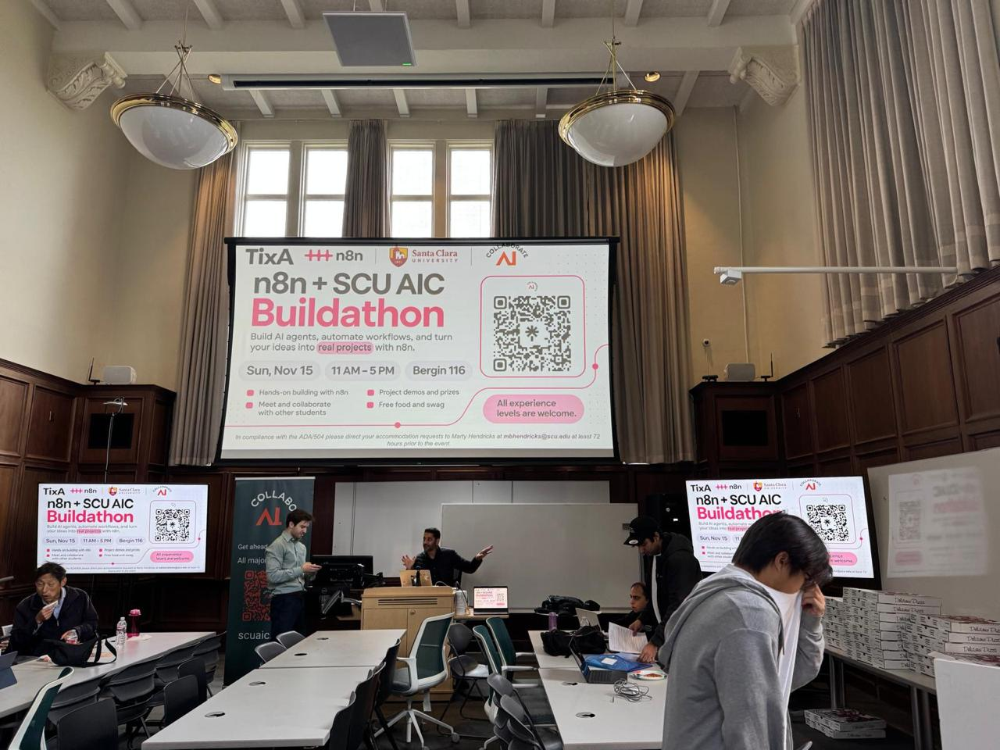
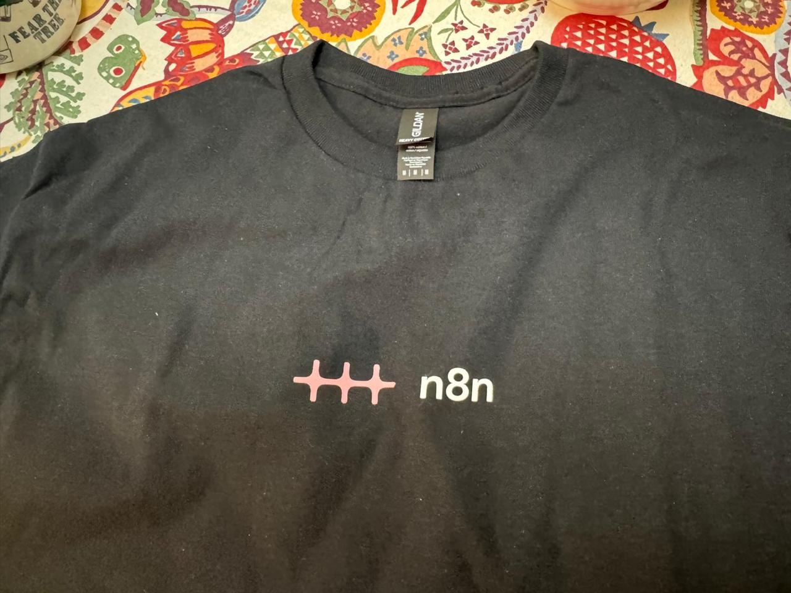

On 15 November 2026, the FlowDaptor team joined the n8n + SCU AIC Buildathon at Santa Clara University. As an n8n official ambassador, we spent the day with student builders, demoing agentic workflows and swapping field notes on what actually works in production.

The next generation of operators, founders, and engineers is learning automation early. They are not asking whether AI agents will change work; they are asking how to wire them together safely. That is exactly the question FlowDaptor was built to answer.
Hosted by n8n and the SCU AI Collaborate club, the Buildathon brought together students from across disciplines to build real workflows in a single day: lead routing, research agents, content pipelines, and ops dashboards.
We showed how FlowDaptor uses the same connect-anything philosophy as n8n, but with tighter guardrails for regulated or high-stakes work:

Student teams move fast. The best teams were not the ones with the flashiest prompts; they were the ones that drew a clear boundary around what the agent was allowed to decide on its own.
That lines up with what we see in the field. Whether you are automating deal flow, customer support, or content operations, the hard part is rarely the model. It is the policy: when to act, when to ask, and when to stop.
No ambassador trip is complete without proof. We brought home the official n8n shirt — a reminder that the best automation communities are built by people who actually show up.

We are doubling down on our n8n ambassador work at SCU and other campuses. If you are a student, club, or faculty member building with agents, get in touch. We would love to demo, mentor, or co-build with you.
Bounded, audited, and ready for real work.